Paper walkthrough
Video-ColBERT
Contextualized late interaction for text-to-video retrieval: query tokens match both raw frame features and temporally contextualized video features.
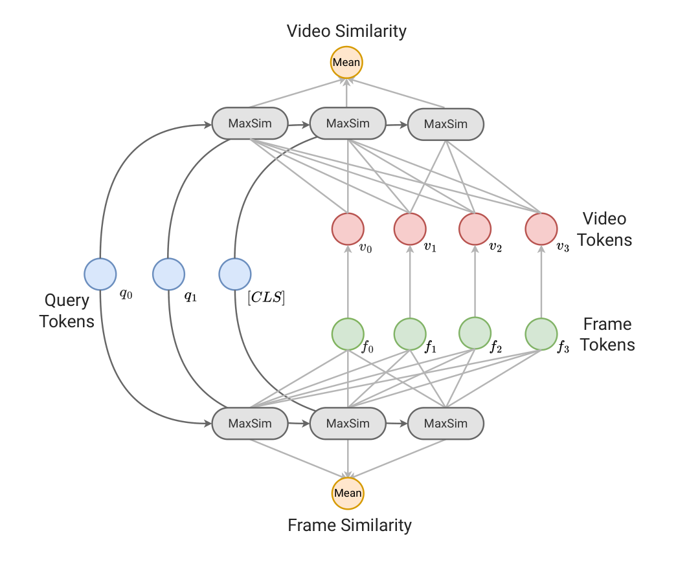
Paper Figure 1. The model keeps two retrieval views alive: static frame tokens in green and temporally contextualized video tokens in red.
Motivation
Text-to-video retrieval needs more than one dot product.
Common bi-encoder pattern
- Encode the text query into one vector.
- Encode a sampled video into one pooled vector.
- Rank videos by a single query-video dot product.
- This is efficient, but it forces a whole video and a detailed query into one point.
What breaks
- A query may mention objects, people, actions, locations, and temporal order.
- Different words should often look at different frames.
- Static frames can reveal objects, while temporal context can reveal events and transitions.
- Pooling hides which visual evidence matched which query token.
Core idea
Video-ColBERT adapts ColBERT's late interaction to video.
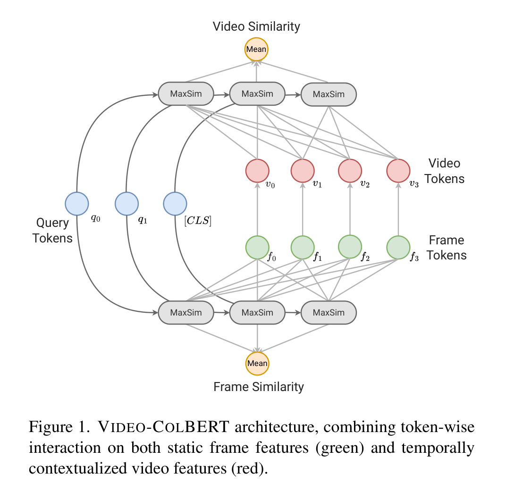
Read the figure from left to right
- Blue: query tokens, including special or padding tokens.
- Green: frame-level features before temporal contextualization.
- Red: video-level features after the temporal encoder.
- MaxSim: each query token searches for its best matching visual token.
- Mean: the model averages query-token matches, then combines frame and video similarities.
The retrieval score is no longer "does the whole query match the whole video?" It is "does each useful query token find strong visual evidence somewhere in the video?"
Architecture
The bi-encoder still indexes videos once, but it keeps token-level evidence.
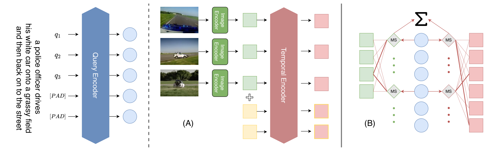
Paper Figure 2. Part A shows encoding. Part B shows dual MeanMaxSim interaction over frame and video features.
MeanMaxSim
The paper changes ColBERT's sum into a mean to handle variable query length.
The mean avoids giving longer queries automatically larger scores. The dual view lets spatial and temporal evidence specialize.
Two visual views
Frame tokens and video tokens answer different questions.
MMS_F: static frame interaction
- Uses frame [CLS] features before the temporal transformer.
- Good for objects, scenes, people, colors, and single-frame evidence.
- Works even when temporal modeling is not necessary.
MMS_V: temporally contextualized interaction
- Uses outputs after the temporal transformer.
- Good for events, motion, transitions, and disambiguating frames by sequence context.
- Benefits from visual expansion tokens entering the temporal transformer.
Expansion tokens
The model adds soft search terms on both sides.
Query expansion
- Padding tokens participate in the text self-attention and in MeanMaxSim.
- They behave like learned, query-conditioned "extra terms".
- This follows the ColBERT intuition that padding tokens can capture implicit search concepts.
- The paper finds the benefit is largest for short queries.
Visual expansion
- Additional visual expansion tokens enter the temporal transformer with frame tokens.
- They can collect context that is not tied to a single sampled frame.
- The implementation uses two visual expansion tokens.
- These tokens are used in the video-level interaction.
Training objective
Dual sigmoid loss trains frame and video similarities as compatible but independent scorers.
The authors argue this avoids a scaling issue from simply summing the two similarities before loss, while encouraging the two representations to stay independently strong.
Experimental setup
The evaluation covers sentence-to-video and paragraph-to-video retrieval.
Datasets
- Sentence-to-video: MSR-VTT, MSVD, VATEX.
- Paragraph-to-video: DiDeMo and ActivityNet, using concatenated localized captions.
- Captions serve as proxies for user text queries.
- Reported metrics include R@1, R@5, R@10, and nDCG.
Model and training details
- Backbones: CLIP ViT-B/32, CLIP ViT-B/16, and SigLIP-B/16 variants.
- Temporal model: 4 transformer layers initialized from the text encoder design.
- Visual expansion tokens: 2.
- Learning rates: 1e-7 for pretrained encoders and 1e-4 for temporal transformer parameters.
Main results
Video-ColBERT is competitive with stronger bi-encoder baselines and wins within several comparable model groups.
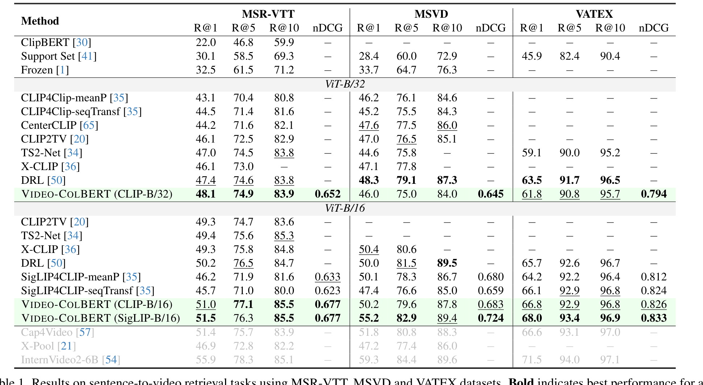
Paper Table 1. Sentence-to-video retrieval on MSR-VTT, MSVD, and VATEX.
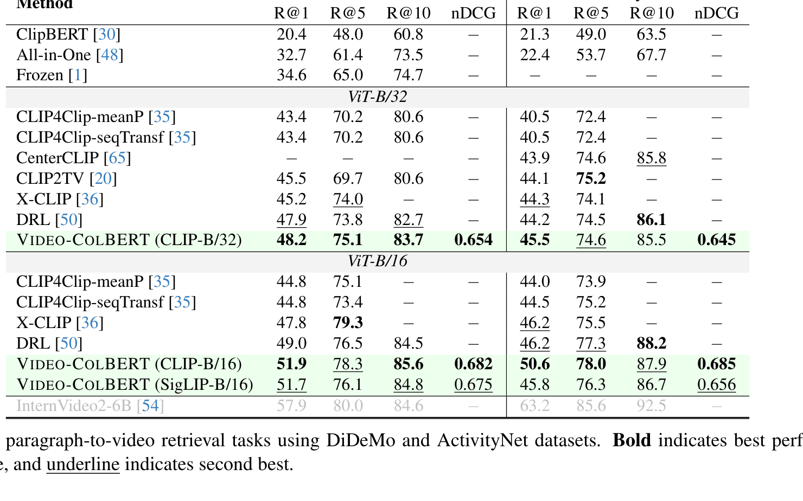
Paper Table 2. Paragraph-to-video retrieval on DiDeMo and ActivityNet.
| Setting | Representative Video-ColBERT result | Reading |
|---|---|---|
| MSR-VTT, CLIP-B/32 | 48.1 R@1 / 0.652 nDCG | Best among the listed ViT-B/32 group in the table. |
| MSVD, SigLIP-B/16 | 55.2 R@1 / 0.724 nDCG | Strong gain for the SigLIP variant on a sentence-to-video benchmark. |
| DiDeMo, CLIP-B/16 | 51.9 R@1 / 0.682 nDCG | Paragraph retrieval benefits from the same token-wise interaction idea. |
Ablation: interaction
The core ablation supports the paper's main claim: both views help.
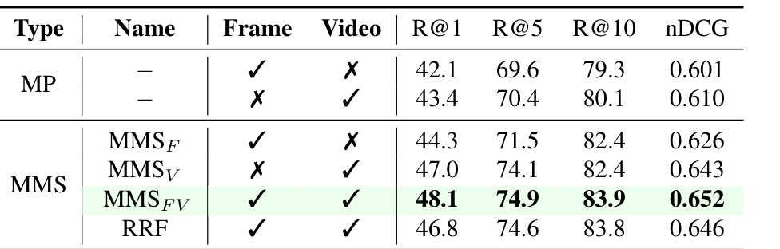
Paper Table 3. Fine-grained token-wise interaction beats mean pooling; combining frame and video features is best.
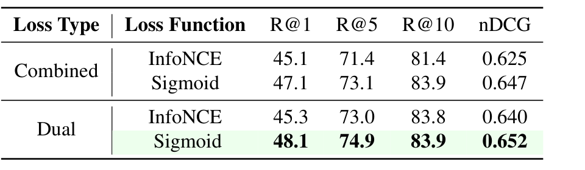
Paper Table 4. Dual sigmoid loss is the strongest training objective in the ablation.
Ablation: query augmentation
Padding tokens help most when the query is short enough to need implied terms.
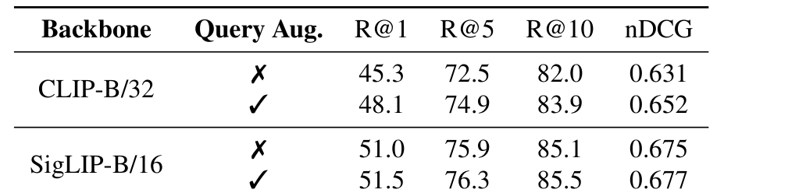
Paper Table 5. Query augmentation improves CLIP-B/32 clearly and SigLIP-B/16 slightly.
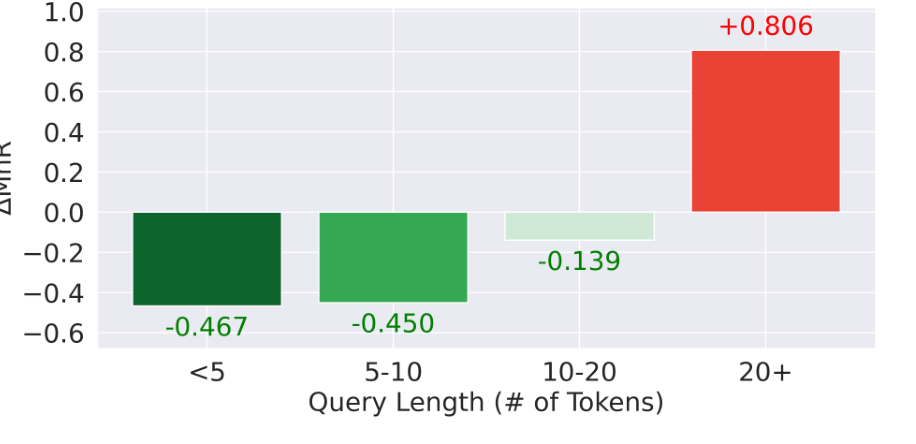
Paper Figure 3. Lower rank change is better. Queries under 10 tokens benefit most; 20+ token queries degrade.
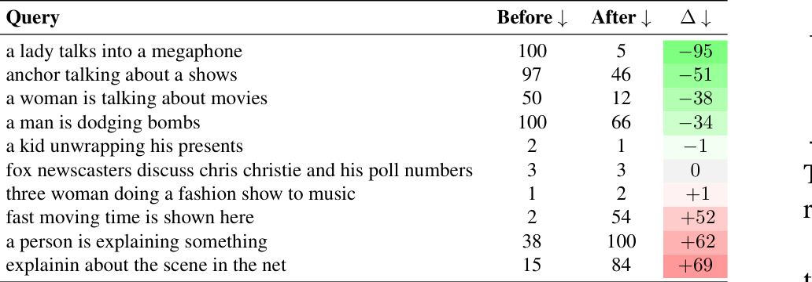
Interpretation
Short prompts like "a lady talks into a megaphone" leave room for implicit concepts such as crowd, stage, microphone, or outdoor scene. Longer prompts may already specify enough evidence, so extra tokens can introduce noise.
Efficiency and knobs
The added interaction is cheap at query time in the reported setup.
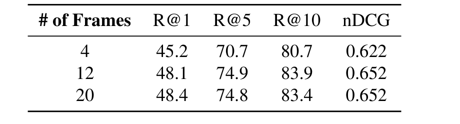
Table 7. Going from 4 to 12 frames helps; 20 frames is marginal on MSR-VTT.
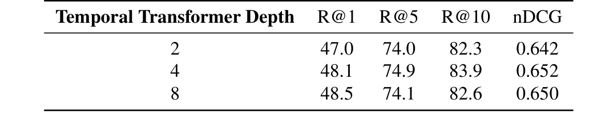
Table 8. Four temporal layers balance retrieval quality in the reported setup.
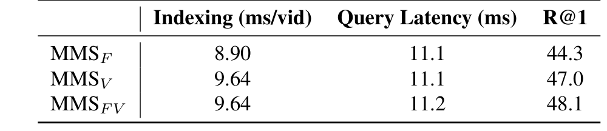
Table 11. MMS_FV has the same indexing time as MMS_V and nearly the same query latency.
Temporal visualization
Before and after the temporal encoder, query tokens attend to different frames.
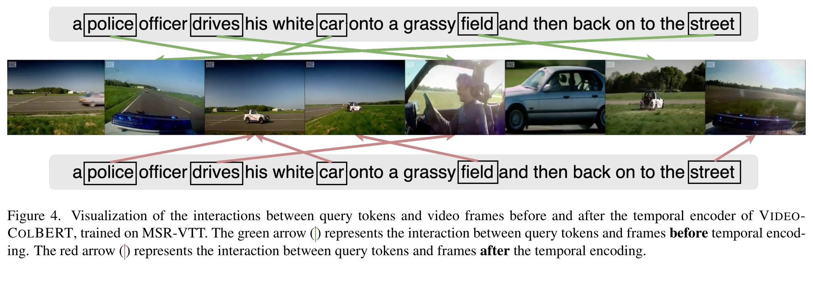
Paper Figure 4. Green arrows show token-frame matches before temporal encoding; red arrows show matches after temporal encoding.
Before temporal encoding
Tokens such as "field" and "street" align with visually direct frames: the field as a static place, or the street from a vehicle viewpoint.
After temporal encoding
Those same tokens can move toward frames that express sequence context: the car partly on the grass field or returning to the street.
How to remember the paper
Video-ColBERT is a multi-vector video retriever with two complementary visual memories.
Best fit
Large video collections where query terms need to match objects, scenes, actions, and temporal transitions without cross-encoding every candidate video.
Open engineering concern
Multi-vector retrieval stores and scores many tokens per video, so production systems still need careful indexing, compression, and reranking design.
Takeaways
The paper's visual story is simple: make each word search the video timeline twice.
One-sentence summary
Video-ColBERT ranks videos by letting each query token find its strongest match among both independent frame features and temporally contextualized video features, then training those two views with a dual sigmoid objective.
Paper: Arun Reddy, Alexander Martin, Eugene Yang, Andrew Yates, Kate Sanders, Kenton Murray, Reno Kriz, Celso M. de Melo, Benjamin Van Durme, Rama Chellappa. "Video-ColBERT: Contextualized Late Interaction for Text-to-Video Retrieval." arXiv:2503.19009v1, March 24, 2025.